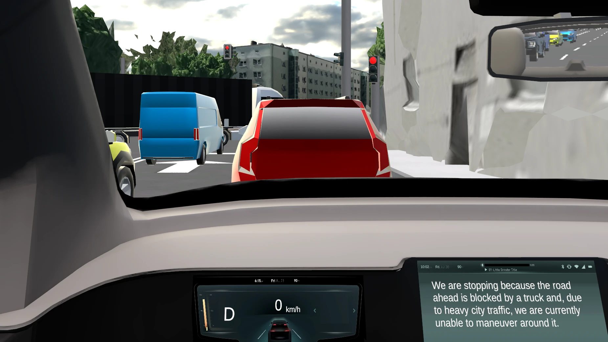
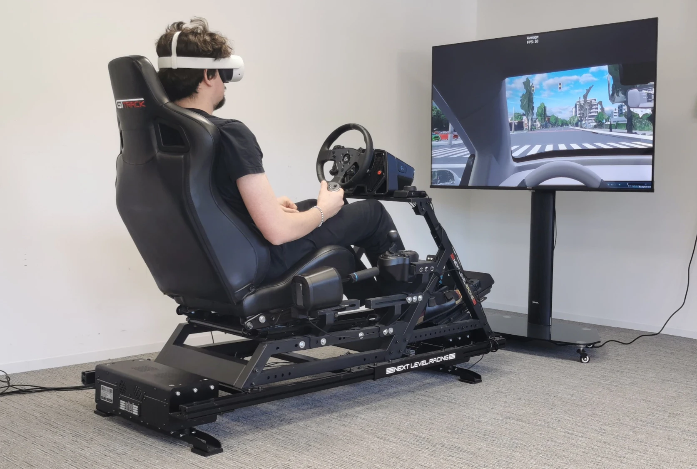
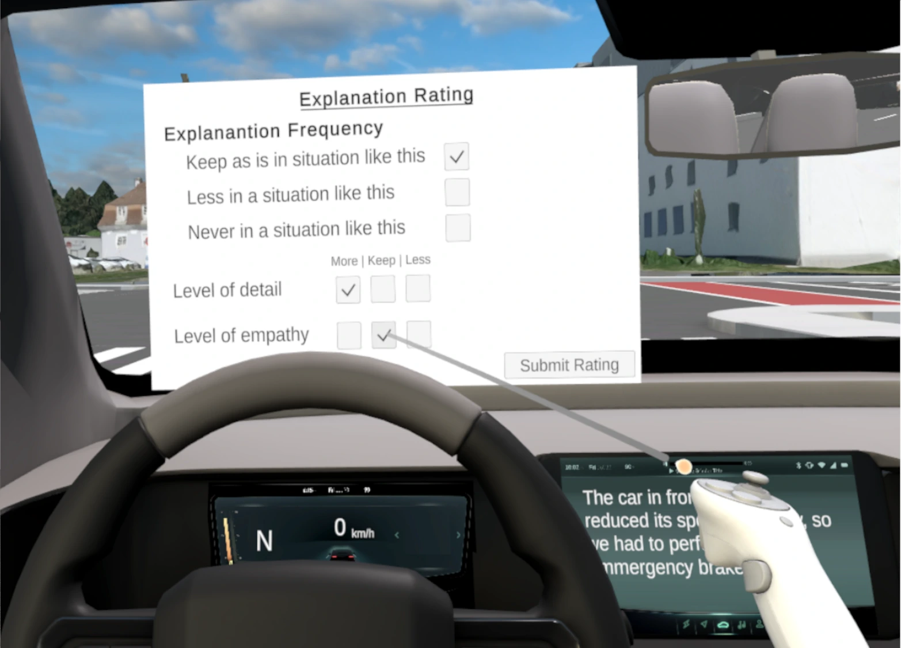

Repeatable driving events
A Unity-based environment supports scripted incidents in urban and highway settings. Researchers can vary criticality and traffic density while keeping vehicle behaviour repeatable.
AutomotiveUI 2026 Work-in-Progress
And when should it stay silent?
We explore how automated vehicles can adapt their explanations to the driving situation and the passenger’s preferences. A motion-based VR simulator makes these interactions repeatable and inspectable.

The vehicle explains why it cannot pass the truck in dense traffic.
Explanation timing. Passenger preferences. The decision to remain silent.
Prototype & design space01 / The research platform
Explanations can help passengers understand vehicle behaviour [1, 2]. Our platform explores how communication can change across repeated encounters, instead of treating information needs as fixed [3].

A Unity-based environment supports scripted incidents in urban and highway settings. Researchers can vary criticality and traffic density while keeping vehicle behaviour repeatable.
A large language model receives structured scenario information, explanation constraints, and preference history. It returns content, delivery mode, and tone instructions.
Passengers can ask to keep, reduce, or omit similar explanations, and adjust detail and tone. The platform stores that feedback with the event and the system’s output.
Context and explicit feedback shape the next explanation.
Road, traffic, criticality, and the event itself.
Scenario facts, constraints, and preference history.
Audio, text, both, or suppression.
Frequency, detail, and tone for similar situations.
Prototype constraints Use supplied scenario facts. Avoid jargon and unsupported speculation. Limit message length. Log the output for inspection.
02 / Incident library
In our VR driving simulator, participants experience automated driving as passengers. An incident is a scripted traffic event that prompts the vehicle to respond, such as changing lanes around an obstruction or braking for another vehicle. The events vary in criticality, traffic density, and road type, allowing us to explore when explanations are useful. An incident does not necessarily involve a collision or emergency.
These examples use no previous-session history. Select an incident to explore its context, read the generated explanation, and listen to the supplied audio. Seven incidents include videos; Incident 3 has audio and details only. Criticality labels follow the study configuration.
After the event
The passenger’s feedback becomes part of the interaction history. The same event can lead to a shorter message, a different delivery mode, or no explanation in a later, similar situation.
How long preferences should persist, and when the system should revisit them, remain open research questions.

03 / Evidence & research directions
The AutoUI work-in-progress paper contributes a research instrument, an adaptive explanation pipeline, and an initial design space. Its manuscript does not report an empirical evaluation; the separate follow-up study below adds exploratory experimental findings.
A separate, unpublished study examined explanation provision and passenger preferences over three sessions. Explore the study and its findings →
The design space is broader than the current implementation.
| Dimension | Current platform | Further investigation |
|---|---|---|
| Frequency | Keep, reduce, or omit explanations in similar situations | When to reintroduce explanations after a preference for silence |
| Detail & tone | Explicit feedback adjusts detail and emotional expression | How preferences change with familiarity and context |
| Delivery | Audio, text, both, or suppression | Visual overlays, ambient cues, and on-demand controls |
| Personalization | Scenario context and stored explicit feedback | Gaze, head orientation, and physiological signals |
| Safety & control | Scenario constraints and inspectable output logs | Validated override rules, uncertainty communication, and preference resets |
Should a passenger know that an explanation was suppressed, or would that become another interruption?
When should a change in context override an earlier preference for fewer explanations?
How should passengers request an explanation, revise a preference, or reset the system’s behaviour?
04 / Unpublished follow-up study
A follow-up simulator study examined how explanation preferences change across repeated drives. The system became more selective about when it explained, while participants increasingly requested more detail in the explanations they received.
These exploratory findings come from a separate, unpublished follow-up manuscript. They were not reported in the AutoUI work-in-progress paper.
Participants experienced automated driving as passengers in a motion-based VR simulator on three consecutive days.
Each drive covered all combinations of low/high criticality, sparse/dense traffic, and urban/highway roads. Concrete incidents differed between sessions.
Passengers rated frequency, detail, and empathic tone. Trust was measured after each drive; the final session included an interview.
Session 1 provided an explanation after every incident. Sessions 2 and 3 used accumulated feedback to decide whether and how to explain. There were 264 incident opportunities, 227 presented explanations, and 37 suppressed explanations.
These charts have different denominators. Provision uses all incident opportunities. Detail preferences use only explanations that were presented and rated. Suppressed explanations could not be rated, so reduced provision is not evidence of reduced overall explanation demand.
| Measure | Session 1 | Session 2 | Session 3 |
|---|---|---|---|
| Explanations presented / opportunities | 88/88 (100.0%) | 71/88 (80.7%) | 68/88 (77.3%) |
| Low-criticality provision | 44/44 (100.0%) | 30/44 (68.2%) | 25/44 (56.8%) |
| High-criticality provision | 44/44 (100.0%) | 41/44 (93.2%) | 43/44 (97.7%) |
| “More detail” among presented explanations | 30.7% (n = 88) | 62.0% (n = 71) | 60.3% (n = 68) |
Source: follow-up manuscript, Table 3 (p. 12) and Section 5.3 (p. 14). Graphs redraw the reported aggregate percentages; they do not estimate uncertainty or reconstruct participant-level data.
In Session 3, the system explained 56.8% of low-criticality incidents and 97.7% of high-criticality incidents. The reduction was concentrated in lower-criticality situations.
Interviewees valued the cause of an action more than a description of behaviour they could already see. Requests for detail point toward useful causal information, not simply longer messages.
Frequency preferences among presented explanations showed no overall session effect. Participants could request fewer future explanations while wanting the current explanation to be more informative.
A repeatability check submitted 50 prompts 20 times each. Mean agreement with each prompt’s majority provision decision was 94.3%, while repeated calls matched the original study decision in 69.7% of cases. These are distinct measures; neither establishes factual correctness.
In a separate evaluation, 14 raters contributed 280 substantive ratings. Requested increases in detail were perceived in the intended direction in 86.7% of ratings, and decreases in 85.6%. Mean plausibility was 6.19 out of 7. These checks assess perceived adaptation and plausibility, not causal benefit or a factual audit.
Source: Sections 3.5–3.6 and 5.7 of the follow-up manuscript.
The study was exploratory: 11 relatively young participants, three sessions, and a simulated passenger experience. Everyone received full provision first, followed by adaptation; there was no group receiving continued full provision. Session differences therefore combine adaptation, repeated exposure, and order.
Trust showed no detectable change across sessions. This does not demonstrate that adaptation improved trust. Ratings of presented explanations also cannot tell us whether a suppressed explanation would have been wanted.
Personalization should decide when an explanation is useful separately from what information it should contain, while allowing passengers to revise their preferences.
Source: When to Explain and What to Say: Longitudinal Preferences for Adaptive Explanations in Automated Driving, unpublished manuscript supplied by the author, 23 pages.
05 / The AutoUI paper
Further reading
The full bibliography is included in the paper.